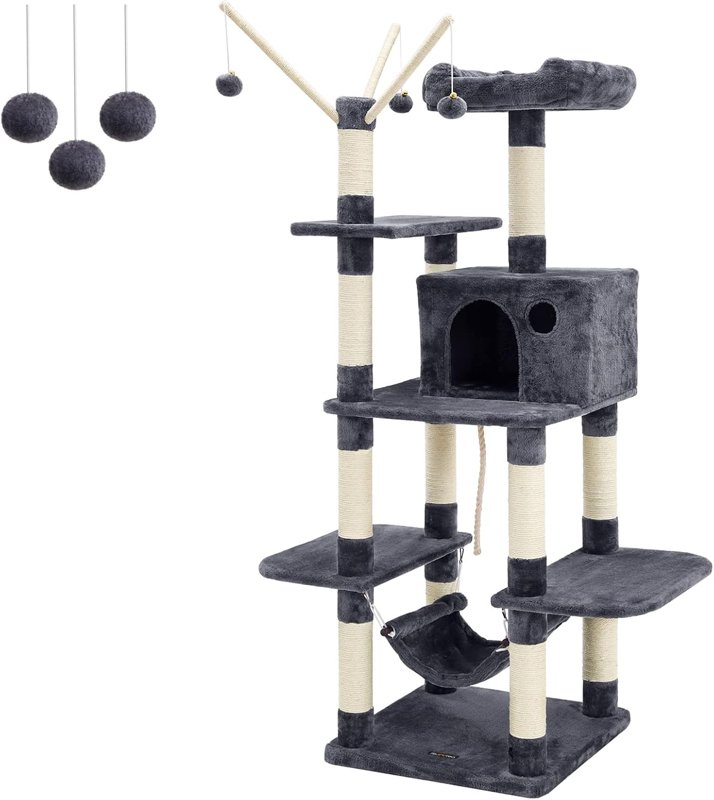
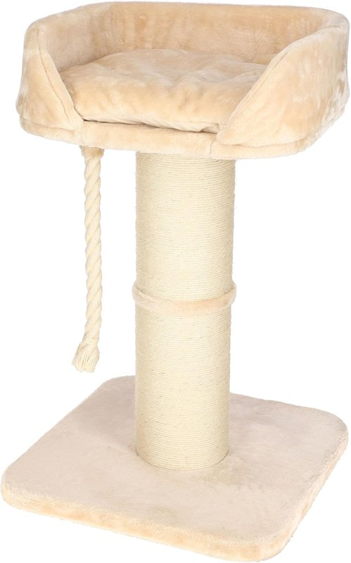

Árboles rascadores para gatos: estables y que duren
Por el equipo de Casa y Comparativa · actualizado el 28 oct 2026
Aviso de afiliados: En calidad de Afiliado de Amazon, obtenemos ingresos por las compras adscritas que cumplen los requisitos aplicables. Si compras desde nuestros enlaces, no te cuesta más. Solo enlazamos ofertas vendidas por Amazon y con Prime.

- Nuestra elección: Feandrea 154 cm con nidos (4,8 sobre 5, 83,99 €).
- Más macizo: Kerbl Toni XL, base de 35 mm (97,55 €; quedan pocas unidades).
- Si hay espacio: lo ideal es uno con tronco de madera (ahora no enlazamos ninguno).
Los que recomendamos (vendidos por Amazon, con Prime)
Altos o macizos, para que el gato no los mueva.

Feandrea 154 cm con nidos PCT86G
- 154 cm de alto; base de unos 50 × 50 cm
- Unos 15,6 kg, según la ficha
- Caseta, nido y hamaca; sisal natural
- Base reforzada y cuerda de fijación
- Las cuerdas y la felpa se desgastan con el uso: lo comentan bastantes opiniones
- 4,8 sobre 5 con 12.143 opiniones

Kerbl Pet Toni XL
- 93 cm de alto; base de 58 × 58 cm; 15 kg
- Placa base maciza de 35 mm y tronco de 20 cm
- Sisal natural de 5 mm
- Cama de 50 × 47 cm; cojín lavable a 30 °C
- 4,7 sobre 5 con 57 opiniones
Precios y opiniones de las fichas de Amazon.es (28 oct 2026). Ninguno tenía el aviso de «devuelto con frecuencia».
Comparativa rápida
| Modelo | Precio* | Altura | Peso | Base | Nota (opiniones) |
|---|---|---|---|---|---|
| Feandrea 154 cm | 83,99 € | 154 cm | 15,6 kg | 50 × 50 cm aprox. | 4,8 (12.143) |
| Kerbl Toni XL | 97,55 € | 93 cm | 15 kg | 58 × 58 cm | 4,7 (57) |
* Precio provisional en Amazon.es el 28 oct 2026; puede cambiar. En el móvil se ocultan algunas columnas.
Nuestra experiencia
En casa, el árbol es imprescindible: los gatos necesitan trepar y cuidar sus garras. Y también cuida nuestra casa, porque lo prefieren para trepar y arañar antes que el sofá o los muebles. Los rascadores pequeños no nos convencen: con su fuerza, los mueven de sitio. Por eso preferimos un árbol alto y estable.
Con dos gatos, como los nuestros, basta con un árbol, aunque se disputan el mejor sitio: ¡hasta se hacían «trampas» para quedarse en nuestro pecho, como niños!
- Un gato: busca altura; no hacen falta muchas camitas.
- Dos gatos: un solo árbol, con plataformas bien repartidas.
- Antes de comprar, piensa dónde ponerlo; si le da el sol, lo disfrutarán muchísimo.
- Con el uso, lo cambiamos a los 2-3 años como mucho: las uñas rompen las cuerdas y lo desgastan, aunque esté bien hecho.
- Si hay espacio, lo ideal es uno con tronco de madera de verdad (ahora no enlazamos ninguno: los que vimos no se vendían por Amazon con Prime).
Qué mirar antes de comprar
¿Postes recambiables? Ninguna de las dos fichas lo indica (sin dato). Garantía: los dos tienen los 3 años de garantía legal al comprarlos a Amazon; garantía propia de cada marca: sin dato.
Preguntas rápidas
¿Hay que anclarlo a la pared?
Si es alto, mejor. El Feandrea trae cuerda de fijación. Del Kerbl: sin dato; es bajo y con base maciza.
¿Para cuántos gatos?
Según las fichas, el Feandrea es para 3-4 gatos de menos de 7 kg, y el Kerbl, para uno o dos gatos pequeños o medianos, o razas grandes como Maine Coon.
¿Cada cuánto se cambia?
Nosotros lo cambiamos a los 2-3 años como mucho: las uñas acaban rompiendo las cuerdas.
Más en «El rincón de tu mascota»
Fuentes y fechas
- Precios, vendedor (Amazon) y valoraciones: fichas de Amazon.es consultadas el 28 oct 2026 a las 19:08 (hora de Madrid; entrega en Madrid, precios con IVA); medidas y pesos de las mismas fichas (25 y 28 oct 2026):
Feandrea 154 cm PCT86G (B01J7AN53C); Kerbl Toni XL (B0BDMHYQBK). - Prime: comprobado el 28 oct 2026 entre las 18:45 y las 19:15 (hora de Madrid), con entrega en Madrid; los dos lo tienen.
- Kerbl Toni XL: ficha del fabricante (consultada el 25 oct 2026).
- Durabilidad del Feandrea: resumen de opiniones de su ficha de Amazon.es (28 oct 2026).
- Pruebas de laboratorio independientes: sin dato.
Aviso de afiliados: En calidad de Afiliado de Amazon, obtenemos ingresos por las compras adscritas que cumplen los requisitos aplicables. Precios y disponibilidad cambian: revisa la ficha de Amazon antes de comprar.